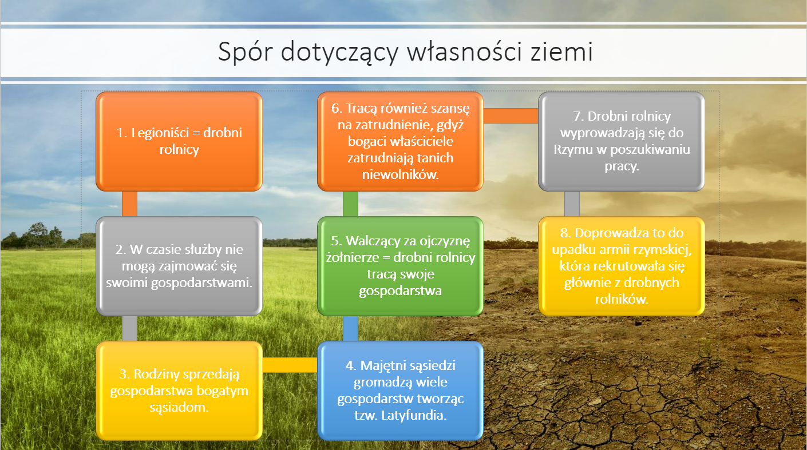

Kryzys Republiki rzysmkiej
Kryzys dotyczył m.in.:
Długotrwałego sporu o własność ziemi.Spraw związanych z tzw. Sprzymierzeńcami, którzy chcieli być traktowani na równi z obywatelami Rzymu.Sytuacja niewolników, którzy w coraz większej ilości napływali do italii i byli coraz gorzej traktowani co doprowadziło do wybuchu powstania z ich udziałem
Reformy Tyberiusza i Gajusza Grakcha
W 133r. p.n.e. trybun ludowy Tyberiusz Grakch zaproponował reformę rolną, która miała poprawic sytuacje drobnych rolników. Wielcy właściciele mieli posiadac jedynie 125h ziemi. Nadwyżki ziemi miały zostać im odebrane i zwrócone najbardziej potrzebującym czyli drobnym rolniką. Dzieło Tyberiusz kontynuował jego brat Gajusz. Jeden jak i drugi stracili życie w wyniku spisku związanego przeciwko obu braciom w senacie.W I w. p.n.e. ziemia miała być nadawana weteranom wojennym pezez ich wodzów, którym podlegali. Ze względu na lojalność wobec wodzów losy weteranów zależały odych pierwszych
Usrój pryncypatu
Cesarzowi podlegała cała administracja. Był najwyższym kapłanem. Stał na czele sił zbrojnych. Najważniejsze decyzje podejmował z niewielkim gronem doradców tworzących tzw. Radę cesarską

powstanie Sprzymierzeńców
Sprzymierzeńcy nie posiadali praw politycznych, ale mimo to musieli płacić podatki oraz brać udział w wojnach prowadzonych przez Rzym. W 90r. p.n.e. wybucha powstanie wzniecone pezez Sprzymierzeńców. Powstanie trwa dwa lata i kończy się brutalnym stłumieniem go przez Rzym. Ostatecznie jednak w obawie przed kolejnymi wystąpieniami, Rzym rozpoczął stopniowe nadawanie obywatelstwa sprzymierzeńcą